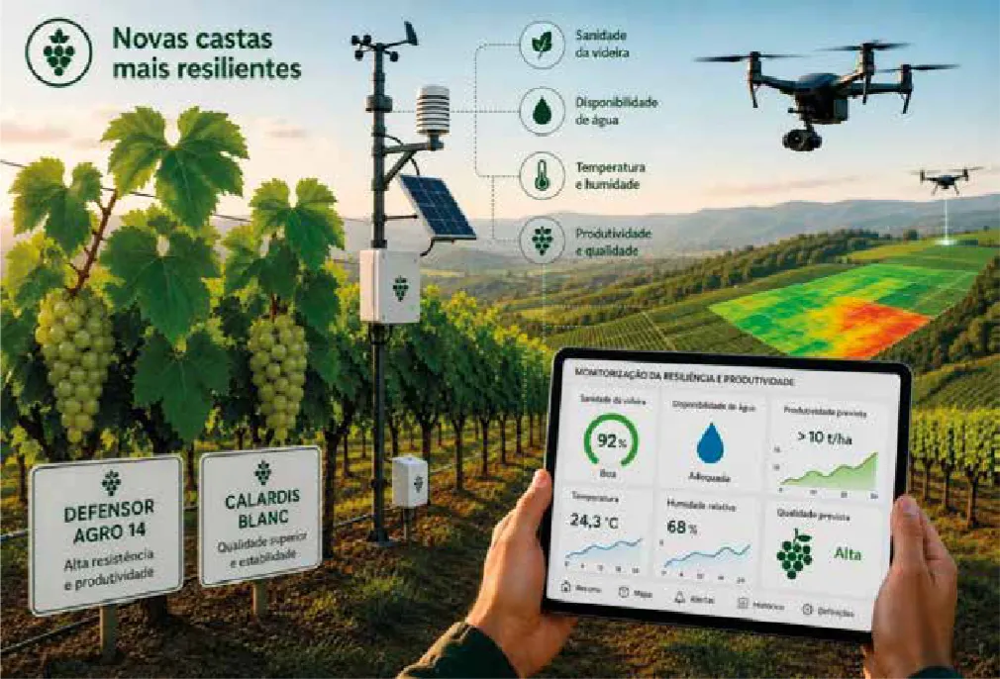

Capítulo 07 · Condições para novas perspetivas
Condições para novas perspetivas
Condições para novas perspetivas de adaptação ao encepamento nacional e às novas exigências ambientais – PLANSEL / Universidade de Évora
Um principal objetivo estratégico dos projetos de I&D PEPAC
C115, em articulação com o projeto VITISAFE, consiste em assegurar ao setor viveirista e à viticultura portuguesa a disponibilidade contínua de material vitícola novo resistente e adaptado às alterações climáticas, ecológicas e comerciais desenvolvidas em Portugal, obtido através de programas de melhoramento genético e validado de acordo com o estado da arte científico e tecnológico utilizada na União Europeia.
Esta estratégia permitirá reduzir a dependência de material vegetal desenvolvido para outras condições edafoclimáticas e assegurar que a utilização de castas PIWI internacionais seja sempre precedida de uma avaliação científica em relação à sua adaptação às condições portuguesas. Contudo, este processo deverá ser contínuo devido à velocidade da alteração dos fatores relevantes.
O objetivo de longo prazo consiste em dotar Portugal de um programa permanente de melhoramento genético, capaz de disponibilizar regularmente novas castas resistentes adaptadas às diferentes regiões vitícolas nacionais, acompanhando continuadamente a evolução dos agentes patogénicos, das alterações climáticas e das exigências dos consumidores.
Esta estratégia encontra-se alinhada com os objetivos do Pacto Ecológico Europeu (European Green Deal), da estratégia Do Prado ao Prato (Farm to Fork), da Política
Agrícola Comum 2023-2027 e das recomendações da Organização Internacional da Vinha e do Vinho (OIV) para o desenvolvimento de material vitícola mais resiliente, reduzindo progressivamente a dependência de produtos fitofarmacêuticos.
Situação jurídica dos direitos de obtentores com genes de resistência
Um pressuposto fundamental do melhoramento da videira é o facto de que, ao contrário da seleção clonal, as novas castas transformadas podem ser protegidas por direitos de obtentor e, na maioria dos casos, encontram-se efetivamente protegidas. Deve ser garantido que o interesse em ganhar royalties não se pode virar a um monopólio desfavorável ao interesse da nossa viticultura. O objetivo é garantir que, em futuros programas de melhoramento, os melhores candidatos do nosso programa atual – portadores das resistências Run1/Prv1, Ren3/P e Rpv3 — possam ser enriquecidos com resistências adicionais, nomeadamente Rgb, Rpv10, Rpv12 e Pdr1 e outras caraterísticas bióticas e abióticas.
Parece que existe um novo espírito da UE de melhoramento genético. Na União Europeia existe o direito de utilizar, sem restrições, variedades registadas para fins de melhoramento e desenvolvimento de novas variedades (Regulamento CE nº 2100/94). A isto chamamos o “privilégio do agente de melhoramento”. Também a organização internacional UPOV reconhece que este privilégio promove o progresso e a inovação e, tanto quanto sei, recomenda aos seus Estados-Membros que o incorporem na respetiva legislação nacional. Por fim, apenas como nota adicional: a União Europeia, está consciente desta situação: os titulares de patentes devem, em particular, disponibilizar informações sobre as patentes e possibilitar a concessão de licenças em condições justas e razoáveis. A reviravolta da União Europeia, com o regulamento 2026/1388 a favor da transformação genética por mutagénese provocada e cisgénica, mostra claramente, por um lado, a importância da proteção jurídica dos obtentores para garantir o progresso e a inovação e, por outro, também o risco de dependência.
Previsão das iniciativas PLANSEL/Univ. de Évora Visão estratégica para a vinha portuguesa
Até 2040, Portugal deverá dispor de um programa nacional permanente de melhoramento genético da videira, capaz de gerar, de forma contínua, novas castas resistentes, resilientes e de elevada qualidade enológica, adaptadas às diferentes regiões vitícolas nacionais.
A surpreendente decisão da União Europeia de adotar o Regulamento (UE) 2026/1388, equiparando a biotecnologia, com as chamadas técnicas de edição genómica (mutagénese) e cisgénicas, a processos de adaptação da natureza, pode ser vista como um primeiro sinal de esperança e representa um possív el afastamento da crescente regulamentação estatal dos mercados agrícolas e uma aproximação a mecanismos próprios de uma economia de mercado. Perante as alterações climáticas provocadas pela atividade humana, os agricultores já hoje se veem confrontados, a uma velocidade sem precedentes, com profundas mudanças climáticas, ecológicas , agronómicas e do mercado. E estas mudanças são apenas o início de pressões futuras, cada vez mais intensas, sobre a fauna e a flora existentes, que poderão ultrapassar a sua capacidade natural de adaptação.
Neste contexto, dificilmente haveria algo mais prejudicial do que insistir em conceções do passado, respondendo aos novos desafios com restrições, obrigações e subsídios cada vez mais numerosos. Em poucas décadas, uma política de forte intervenção estatal contribuiu não só para défices orçamentais e para o aumento da dívida pública, mas também para distorções e alguns desenvolvimentos económicos desfavoráveis no setor agrícola profissional.
Ao longo dos diferentes ciclos económicos históricos, foram repetidamente grandes impulsos de inovação que contribuíram para o crescimento. Foi assim com a domesticação de espécies animais e vegetais, mais tarde com a mecanização e, na era moderna, com a utilização da energia fóssil e da hidráulica, da eletricidade e, finalmente, da digitalização. Neste sentido, a biotecnologia poderá ser a tecnologia capaz de proporcionar à economia os instrumen-
2026–2027
tos necessários para responder, através de mecanismos de
Validação agronómica, sanitária e enológica
mercado, aos novos desafios e às mudanças de paradigma, através de estratégias alternativas que aproveitem a flexibilidade genética das culturas agrícolas, até agora possível de adaptá-las às novas condições. Por um lado, este processo pode futuramente ser cada vez mais dispendioso; por outro, os métodos convencionais de adaptação têm naturalmente os seus limites definidos pela genética da cultura.
O melhoramento vegetal através de cruzamentos tradicionais foi e continua a ser um instrumento fundamental para o desenvolvimento de novas variedades resistentes. Trata-se, porém, de um processo extremamente demorado. Com a mudança de orientação introduzida pelo Regulamento (UE) 2026/1388, abre-se agora uma porta adicional. Em combinação com os métodos tradicionais de melhoramento vegetal, as novas possibilidades biotecnológicas poderão permitir uma adaptação cada vez mais rápida às crises climáticas que se perspetivam. Esta questão assume particular importância na viticultura das regiões do sul da Europa, um setor historicamente marcado por fortes condicionamentos ideológicos e culturais. Perante os desafios futuros, será necessário privilegiar o pragmatismo em vez do conservadorismo, permitindo que a viticultura europeia
2027–2030
utilize tanto os métodos tradicionais como as novas possi-
Desenvolvimento da segunda geração de
bilidades oferecidas pela biotecnologia.
melhoramento genético (considerando VitiSafe)
Prioridades previsíveis de futuras iniciativas de melhoramento
• Elevada qualidade sensorial do vinho;
• Elevado potencial produtivo aliado à estabilidade da produção;
• Teor alcoólico moderado e adequada capacidade de manutenção da acidez;
• Tipicidade sensorial próxima das castas tradicionais;
• Elevado potencial qualitativo dos precursores aromáticos e dos compostos fenólicos (polifenóis, antocianinas, qualidade dos taninos e estabilidade oxidativa);
• Elevada eficiência no uso da água (Water Use Efficiency);
• Tolerância ao calor (eficiência transpiratória, regulação estomática e temperatura da superfície foliar);
• Plasticidade fenológica, evitando rebentação e maturação excessivamente precoces;
• Tolerância ao escaldão (por comparação empírica em
diferentes anos de ondas de calor) e aos danos provo-
cados por aves; • Aptidão para mecanização; • Longevidade e estabilidade agronómica das planta-
ções; • Perspetivas da Cisgénese e da Edição da Videira para
responder continuamente às futuras necessidades de
resistência Genómica.
• Instalação e monitorização de ensaios nacionais
com duas castas portuguesas resistentes (Defensor,
Tintão, AGRO 14), portadoras de resistência (no caso
de ser autorizado). • Avaliação comparativa e seleção de redução de
castas PIWI internacionais de elevado interesse,
visando determinação da sua adaptação às diferen-
tes regiões. • Caracterização agronómica, sanitária, fenológica e
económica de genótipos nacionais resistentes em
condições reais de produção; com especial ênfase na
avaliação enológica. • Promover iniciativa de protocolo nacional de moni-
torização e avaliação técnico-científica. • Selecionar fenótipos nos campos de biodiversidade
com prospeção mofofuncional a favor de melhor
adaptação às alterações ambientais de 5 castas
autóctones de maior impacto económico, parte pro-
jeto PEPAC C115, com objetivo de futuramente ser
transformado, correspondente ao regulamento UE
2026/1388, a clones com genes de resistência biótica.
• Piramidação de novos genes de resistência ao míldio
e ao oídio, integrando, nomeadamente, Rgb, Rpv10,
Rpv12. • Desenvolvimento de programas de resistência à
Xylella fastidiosa; • No caso de castas novas resistentes: integrar técnicas
de cisgenética e de edição genómica no processo
da piramidagem de resistência em conformidade
com o ‘Estado da Arte’. • Estudar e/ou integrar novos descritores (bióticos e
abióticos) de adaptação às alterações ambientais. • Iniciar processo de melhoramento por edição gené-
tica de precisão (mutagénese) e cisgénico (Run 1,
Rpv 1) de clones obtidos por seleção morfofuncional
de 5 castas autóctones de maior impacto econó-
mico nacional: Aragonez (10,6 %); Touriga Franca
(9,2 %), Touriga Nacional (7,6%); Fernão Pires
(6,7%); Alicante Bouschet (5,4%); Tricadeira (3,7%).
(valores % anuário IVV 2024).

Fig. 19 – Painel ilustrativo simbólico sobre a futura geração de Vitis vinifera em Portugal.
2031–2035 Disponibilização da nova geração portuguesa de castas multirresistentes para experimentação
Objetivos estratégicos:
• Disponibilizar, pelo menos, 7 castas brancas e 7
tintas portuguesas multirresistentes, correspondentes ao conceito internacional de resistência durável ("nível RESDUR").
• Selecionar igualmente 7 castas PIWI internacionais de referência (sensível e com resistência adquirida) para avaliação comparativa.
• Produzir kits normalizados de um mínimo e máximo
definido de castas resistentes, destinados à instalação de campos de experimentação por viticultores, viveiros, Comissões Vitivinícolas Regionais e instituições científicas.
• Promover uma rede nacional permanente de expe-
rimentação do setor vitivinícola;
• Evidenciar perspetivas da Cisgénese e da Edição
Genómica da videira para responder continuamente
às futuras necessidades de resistência. 2035–2040 Disponibilização de produtos concretos pelo setor profissional
• Concluir os processos de inscrição, certificação e autorização para produção de vinho das novas castas portuguesas resistentes;
• Apoiar a integração regulamentada de castas PIWI internacionais, cuja adaptação às condições portuguesas tenha sido cientificamente demonstrada;
• Disponibilizar ao setor viveirista material certificado com identificação das caraterísticas suficiente para responder às necessidades da viticultura nacional;
• Criar as condições para que Portugal disponha de um sistema permanente de inovação em melhoramento genético da videira, comparável.
Conclusões finais
O setor vitivinícola encontra-se, a nível mundial, num momento de profunda transformação. O consumo de vinho está a diminuir em muitos mercados tradicionais e, sobretudo entre as gerações mais jovens, a sua dimensão cultural e hedonista perdeu parte da capacidade de atração. Simultaneamente, o vinho é cada vez mais confrontado com perceções relacionadas com saúde, teor alcoólico e impacto ambiental. A Organização Mundial da Saúde (OMS) reconhece a existência de um risco carcinogénico associado ao consumo de álcool. Por outro lado, estudos epidemiológicos têm descrito uma associação entre o consumo moderado e uma menor mortalidade cardiovascular, bem como determinados efeitos positivos sobre o bem-estar psicológico e a integração social (o “efeito de hedonismo social”). Mas o consumo de álcool comporta riscos de dependência e de consumo excessivo ou nocivo. Ao longo dos últimos anos, conceitos como sustentabilidade, produção biológica, resiliência e agricultura regenerativa procuraram responder a estes desafios. Apesar da sua importância, não foram, por si só, suficientes para inverter a tendência. Para criar uma verdadeira mudança é necessária uma inovação capaz de despertar curiosidade, gerar uma nova narrativa para o vinho e, sobretudo, oferecer benefícios concretos e facilmente compreensíveis aos consumidores e à sociedade. Neste contexto, o Regulamento (UE) 1388, de junho 2026, representa uma mudança de paradigma. Ao reconhecer os progressos da biotecnologia e ao criar um enquadramento para a sua utilização de forma pragmática, a União Europeia abre uma oportunidade histórica inovativa em lugar de criar regras de limitação normativa e burocráticas. A possibilidade de desenvolver videiras resistentes às principais doenças e desafios climáticos, mantendo simultaneamente a identidade das castas que definem os vinhos europeus, poderá transformar profundamente a viticultura. O projeto PLANSEL / Universidade de Évora constitui um primeiro passo concreto nessa direção com a criação de uma nova biodiversidade nacional de castas resistentes e de adaptação climática. O próximo objetivo é desenvolver, a partir de cinco das castas portuguesas autóctones mais importantes, novos clones resistentes aos agentes nocivos, adaptados às condições futuras da viticultura portuguesa, com maturação mais tardia, potencial para produzir vinhos com menor teor alcoólico e melhorar a qualidade dos vinhos. Portugal dispõe do conhecimento científico, das instituições e das competências técnicas necessárias para assumir uma posição de liderança na inovação
vitícola europeia: menos subsídios nas culturas, um plano nacional da viticultura atualmente inexistente com apoios consequentes e continuado com linhas de I&D definidas, uma coordenação eficaz entre as instituições responsáveis e a fileira profissional, idealmente com supervisão, e uma plataforma nacional de experimentação e ensaio. Se Portugal conseguir concertar as iniciativas dos diferentes atores de opinião em favor de uma economia concorrencial e competitiva, em vez de criar tabus em torno da inovação, o país tem hoje a oportunidade não apenas de acompanhar esta transformação, mas também de ajudar a liderá-la.